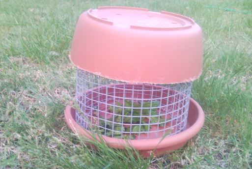

Australian Water Dragons have quite contrasting activity patterns which is dependent on the season and average daily temperature within the animals range. During spring and summer, Water Dragons of various ages and sizes can be seen in the various riparian environments they inhabit, basking on riverbanks and rocks, lounging in trees, swimming as well as foraging for food on land (Ehmann 1992. Worrell 1966:75). They can sometimes be hard to observe but even animals accustomed to human attention will be quick to escape if approached too closely by either dropping from rock ledges and branches into the water (Cogger 2000:346) or running bipedally to the water or thick cover. Young Water Dragons prefer to be on the ground (R. Wells in Anonymous 1974:21) animals appear to be more wary than the larger adults, juveniles of P. l. lesueurii have been observed staying completely still when found by humans on a grassy section metres from the water, relying heavily on its dull grey camouflage to blend in with the grass and fallen leaves.
In captivity, this behaviour can be sustained throughout the year, as long as sufficient heating and lighting is maintained. Water Dragons prefer to sleep either in an elevated position or in a secluded corner of the water vessel. Water Dragons can appear quite lazy in captivity, however if the exhibit is of sufficient size and requires the animal to exercise by moving between basking and swimming opportunities, then all animals should be moving for a satisfactory part of their day. Captive Water Dragons can however suffer from obesity if their dietary intake is greater than the animal’s daily activity. An enrichment program (see Section 9.7) should be developed for Water Dragons that maximises movement throughout the enclosure. Water Dragons have a much lower preferred body temperature than other Australian agamid lizards, of 30.1ºC, compared to a range recorded between 34.6-39.0ºC from 12 other species (Greer 1990:19) the species is therefore active for much longer into the colder periods than other Australian lizards. In the Sydney region, Eastern Water Dragons, P. l. lesueurii, are still active throughout June.
In the wild, Water Dragons escape low winter temperatures by slowing down their metabolism and entering a state of brumation (Goulding and Green 2006:24). Water Dragons will use established burrows or scrape their own between boulders and logs in or near riverbanks to overwinter, which they will pack dirt into the opening and seal themselves off to brumate until the spring (Griffiths 2006:61). One wild adult male I. l. lesueurii was observed at Taronga Zoo in the middle of August (Pers. Ob.) as the only visible individual in the zoo, where a large wild population is known. This was most likely due to the fact that this animal had figured out that the pool of the Freshwater Crocodile, Crocodylus johnstoni, was heated. Water Dragons will usually decrease food intake when the air temperature drops to between 18-22ºC, and brumate when the average day temperature reaches below 12ºC (Goulding and Green 2006:24). The change in activity is also affected by the reduction of the photoperiod, which many reptiles will use as a seasonal indicator (Swan 2006:29).
Water Dragon kept in stable temperature but with access to natural light levels will slow down during winter, despite there being sufficient heat to thermo-regulate and digest food (Pers. Ob.). It is important to reduce food intake during the colder months especially for Water Dragons kept outside, after a few weeks the animals will eventually take no food for approximately six weeks. During brumation, captive animals kept outdoors will bury themselves in leaf litter beneath logs and other furnishings (Goulding and Green 2006:24). Indoor animals may choose to hide beneath furnishings or sit in the water vessel almost completely submerged. Sitting in the water over winter is also observed in the wild, the tannins in the water will stain the lizard’s skin, making the dragon appear discoloured until the next slough (Aland 2008:461).
In the wild, Water Dragons can be found in large numbers in areas of suitable habitat. These groups are usually comprised of several females, juveniles of various ages and a dominant male who will defend as much of the territory as possible from other males. Water Dragons can be observed interacting through a variety of domineering a submissive signals including; head-bobbing (R.Wells in Anonymous 1976:21), saluting and substrate licking, the actual meanings of displays are not understood.
Males of similar size will fight each other when confronted. Males of larger size will tend to easily chase away smaller males but if this does not occur aggressive behaviour will occur. Male Water Dragons will first attempt to deter their opponent through intimidation; by walking tall and puffing the jaws with mouth open wide (see Image 18) and will try to appear as large as possible to each other (Griffiths 2006:57), if this does not deter one of the males, ritual combat will result.
Daly (1992:37) described such combat involving two males at Stanwell Park. The two animals were found motionless on the ground, sided up to each other so that each animal had its head next to its opponents hip area. Suddenly, both animals proceeded to circle each other while taking short bites of each others hip area. This would be interrupted by staying still again, then erupting into action again and repeating this pattern several more times. These two animals (which were measured and weighed; see Table 1), as well as one at nearby Coalcliff had wounds from battle on their hips (Daly 1992:37). M. Maddox (in Anonymous 1976:21) observed the fighting between males as lasting for ten minutes in which scratches and bites were delivered to the necks of both animals. Apart from intra-sexual aggression of males, other reproductive behaviour recorded includes arm waving or saluting and head bobbing from males which is a sign of readiness to court females. The male will chase the female and hold onto her neck or shoulders with his jaws as he aligns their cloaca and inserts one of his hemipenes in order to copulate (Goulding and Green 2006:27). Once gravid, female Water Dragons will increase the amount of time they spend basking as the eggs develop inside her (Goulding and Green 2006:27). The female will dig test holes in sandy soil areas of her enclosure or wild home site, up to a week before actually laying. Potential burrows are inspected by the female by placing her snout into the burrow, presumably to test that the temperature is sufficient to incubate the eggs (Harlow and Harlow 1997:17).
Swimming and sitting in the water is an important behaviour for Water Dragons. In the wild water dragons can be found diving in deep dams and rivers or sitting in shallow streams and ponds (Anonymous 1976) Sitting or swimming in the water is observed in both wild and captive Water Dragons as water is used as a refuge but also as a safe place to slough skin and defecating without attracting predators. Turner (1999) made several observations of P. I. howittii sleeping in the water, completely submerged except for the nostrils protruding above the surface. In captivity (Pers. Obs.) most defecating and sloughing occurs in the water and animals will normally submerge themselves to avoid human contact. Some large individuals will sleep underwater or amongst waterlogged logs and may spend a period or all of the winter in the water (Aland 2008:461).
If crowded, large individuals may be unusually aggressive to other animals including females. Keepers should observe minimum space requirements for this species (see Section 4.3), and provide multiple feeding and basking areas as well as visual barriers between individuals. There are otherwise no documented ‘behavioural problems’ associated with this species such as stereotypical pacing or other abnormal activities. Any observed problems such as inactivity and lack of coordination are likely to be caused by some form of health problem and should be investigated by a veterinarian. Water Dragons will instinctively be wary of people and other animals and have a tendency to suddenly leap away and hide, however this behaviour is understood as very natural and keepers should adjust to this through proper exhibit design and husbandry techniques.
Stress in Water Dragons can be identified in individuals who consistently hide from humans and other Water Dragons. Even very nervous Water Dragons should hold their ground and observe people for a few seconds before fleeing. Similarly, Water Dragons in a natural state appear to be tolerant of each other, so constant aggression and avoidance of other animals in captivity is most likely a sign of overcrowding or inappropriate social dynamics (for example more than one adult male and a single female). Stressed animals will stop eating, can lose weight and increase their susceptibility to parasites and disease (Goulding and Green 2006:27,34).
Behavioural enrichment is the management of the captive environment in order to decrease the predictability of captivity and encourage animals to exhibit natural behaviours. The benefits of ‘enrichments’ if executed correctly are that such programs can increase physical and mental exercise of captive animals, thus improving the health and well being of animals in captivity. Although most enrichment programs have been developed for birds and mammals; reptiles, amphibians and even invertebrates now have enrichment programs, with such programs only being limited to a keepers imagination and commitment. Based on encouraging natural behaviours, enrichment programs are important educational tools to demonstrate natural history concepts. For a suggested enrichment calendar see appendix 2.
When kept outdoors in an aviary, Water Dragons will feed on naturally occurring invertebrates that blunder into the enclosure (Harlow and Harlow 1997:14). Since the invertebrates enter the enclosure in no pre-determined way, such feeds are random and act as an enrichment activity. Such feeds will occur in any situation where lizards are kept outside however this can be encouraged by keepers. Invertebrates such as flies, beetles and cockroaches can be lured into the exhibit by using a mix of fruit and vegetable scraps. A ‘composting cage’ can be created from wire mesh and a plastic pot saucer (see Image 19). Designs can differ but all such devices are suitable provided they achieve the following functions: a) keep the fruit dry. b) allow the fruit to be accessed by keepers and changed. c) prevent the Dragons from feeding on the rotten fruit. d) allow easy access between the mesh for insects to enter and leave the cage. The downside to this method is that it is impossible to know how much individual dragons are eating.
Similar to the method described above, blue lights mounted within or adjacent to outdoor enclosures can be used to attract nocturnal insects such as moths and beetles. These night-time snacks will provide occasional enrichment feeds. Similarly Huntsman Spiders are often attracted to places where moths are often found and can provide further feeding opportunities. Like the last enrichment method it is impossible to know how much additional feeding this enrichment is providing the dragons. For Water Dragons kept indoors, light traps can be purchased which utilise a blue-light and a fan to trap moths outdoors which can then be fed out to the Dragons in the morning. This way the amount of food being eaten can be recorded.
Mealworm tubes have the advantage of allowing a measured amount of mealworms to be fed out, which can then be recorded by keepers. Mealworm tubes are PVC pipes that can be made to varying lengths and capped at each end. A series of 3-4mm holes are drilled into one of the sides and the tube can be mounted horizontally, with the holes facing down, in an elevated location such as a wall or ceiling. One of the caps can be removed and a measured amount of mealworms can be added and the cap replaced. The worms will then wiggle around and fall randomly over the course of a few hours, providing unpredictable feeding opportunities for the Dragons.
A simple non-feeding form of enrichment is a scheduled re-arrangement of enclosure furnishings. Moving rocks, logs, branches and plants in the captive environment provides new opportunities to explore, also by moving heating equipment, new basking opportunities are available when being kept indoors. However, if heating devices are moved, keep in mind the need to ensure a thermo-gradient which allows all animals to maintain their preferred body temperature (see Section 4.6).
Introducing new Water Dragons to a group should only be done if the enclosures physical space allows and if the group dynamic is considered prior to release (e.g. not introducing a mature male to a group which already has a dominant male). Sufficient visual barriers and hiding opportunities should be provided so that the new animal has the opportunity to conceal and defend itself from possible aggression in the established group. New animals can be provided with visual contact to the group by being housed initially next to the groups enclosure before being physically introduced. Similarly, animals that are removed can be placed in nearby enclosures to maintain visual contact with other animals, which may reduce the stress of isolation.
Numerous Water Dragons can be housed together providing that there is sufficient space (on both land and water), feeding stations and basking opportunities. Young Water Dragons should not be held with adults to prevent the possibility of cannibalism and injury. Only a single dominant male should be held in a captive group, otherwise there will be numerous fights leading to injuries. That said, the species is quite social in the wild and they should not be held as solitary animals, numerous females can be held together and different mature males can be rotated through a single exhibit.
Australian Water Dragons have been kept in captivity with a variety of other species including fish, turtles, birds and as well as some mammals. Water Dragons appear to be fine with other animals as long as they are the largest predator in the exhibit and the other species are not seen as food. At Sydney Aquarium, Eastern Water Dragons, I. l. lesueurii, are housed with Platypus, Ornithorhynchus anatinus, Macquarie Turtles, Emydura macquarii, Eastern Long-neck Turtle, Chelodina longicollis. In the same institution Gippsland Water Dragons, Intellagama. l. howittii are kept with various species of turtles, fish and birds. At Sydney Wildlife World, Eastern Water Dragons, I. l. lesueurii juveniles have been successfully kept with Scrub Pythons, Morelia amethistina. Oceanworld at Manly kepts a small colony of Eastern Water Dragons, I. l. lesueurii with Eastern Bearded Dragons, Pogona barbata, Eastern Blue Tongue Lizards, Tiliqua scincoides scincoides, and Land Mullet, Egernia major, as well as Macquarie Turtles, Emydura macquarii, Eastern Long-neck Turtle, Chelodina longicollis, and Longfin Eel, Anguilla reinhardtii. Adelaide Zoo displays Gippsland Water Dragons, I. l. howittii, with various species of freshwater turtles. According to Tom Vowell (2009 pers. comm. 24th August), the Australian Reptile Park has exhibited Red-bellied Black Snake, Pseudechis porphyriacus, with Water Dragons as well as juvenile Water Dragons with Saw Shell Turtles, Myuchelys latisternum, with so far with no negative effects on either species There may be other species that are compatible with Water Dragons, as long as adequate space, the number of feeding stations and basking sites are considered as well as the possibility of interspecific predation.
9.13 Suitability to Captivity
According to Worrell (1966:75) the Eastern Water Dragon is one of the hardiest species to keep in captivity. When young or newly acquired, Water Dragons will be nervous and dislike human company, however given enough privacy and quiet conditions will adjust to people over time (Weigel 1988:103). Although they do have a tendency to bite keepers and are less likely to be easily handled like Bearded Dragons, Pogona spp. Water Dragons do not appear to stress easily provided that basic housing needs of space, water, and climbing opportunities are met and the health of the animal is maintained.